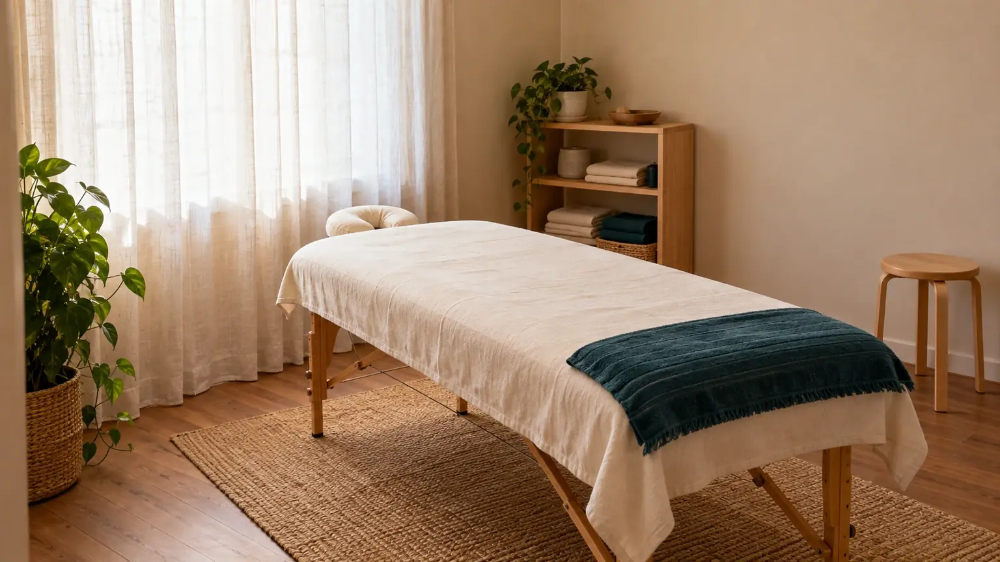
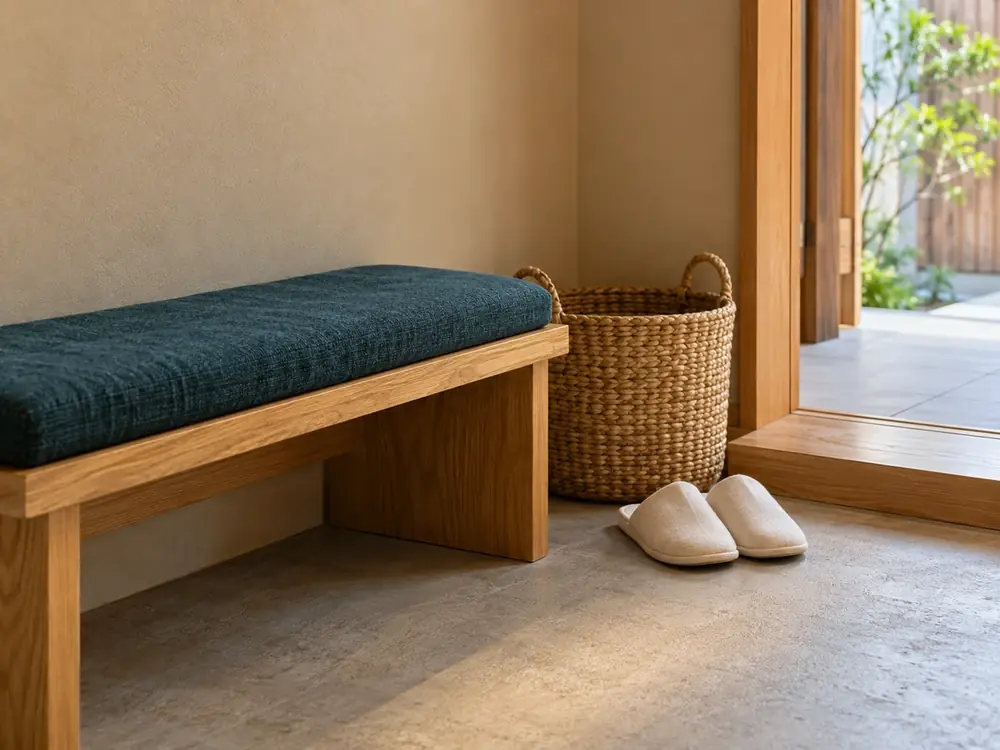
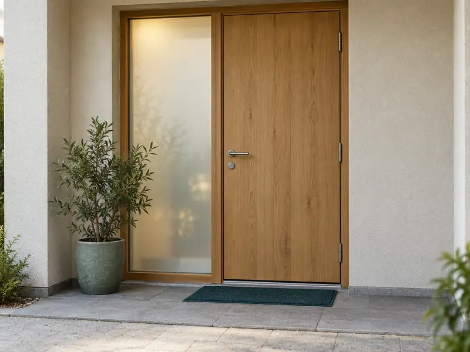

架空県 灯町2丁目商店街のなかひとりで営む整体院
こわばった日に、
60分。
肩・首・腰のこわばりを、手で整えます。初回は、話を聞く時間を長めにとります。
当日のご予約は電話で。回数券のおすすめはしていません。1回ごとのお支払いです。

- 初回の料金
- 5,500円税込・約75分
- 1回の時間
- 60分2回目から。30分コースも
- 予約の方法
- 電話／Web当日は電話で
料金・時間は見本用の架空の設定です。
しなりがすること
- 肩・首・腰まわりのこわばりを、手で整えます
- 生活の様子を聞いて、次に来る目安を一緒に決めます
- 家でできる、短い体の動かし方をお伝えします
しないこと
- 病気の診断や治療（医療機関ではありません）
- 回数券やまとめ払いのおすすめ
- 強い痛み・しびれがあるときの施術（先に医療機関へ）

こんな日に
「なんだか重い」日に、寄っていく場所です。
振り向くと、首が回りにくい
画面に向かいっぱなしで、肩が上がったまま
立ち仕事のあと、腰が重い帰り道
庭仕事や片付けのあと、かがむのがおっくう
平日20時まで受付。着替えなしで、仕事帰りにそのまま受けられます。
1回の流れ
60分の使い方を、先にお見せします。
- 5分
受付
荷物を置いて、5問だけの問診票を書く
- 10分
話を聞く
どこが、いつから、どんなふうに。初回は長めに
- 40分
施術
手でゆっくり整える。強さは途中でも変えられます
- 5分
次回の目安
次に来る目安を一緒に決める（決めなくても可）
料金
料金と時間を、先にお伝えします。
- 回数券なし1回ごとのお支払い
- お支払い現金・電子マネー
- キャンセル前日までの連絡で無料
税込。見本用の架空価格・設定です。
しなりについて
初回は、話を聞く時間を長めに。
灯町の商店街で、ひとりで営む整体院です。受付から施術まで同じ人が担当します。強く押したり、音を鳴らしたりはしません。
- 手
- 高さを変えられる椅子
- 温めたタオル
医療機関ではありません。病気の診断や治療は行いません。強い痛み・しびれ・けがのあとは、先に医療機関へ。体の変わり方には個人差があります。
受付時間
仕事帰りの20時まで。
| 月 | 11:00〜20:00 | |
|---|---|---|
| 火 | 11:00〜20:00 | |
| 水 | 11:00〜20:00 | |
| 木 | 11:00〜20:00 | |
| 金 | 11:00〜20:00 | |
| 土 | 10:00〜17:00 | |
| 日 | 休み |
アクセス
灯町駅から歩いて約4分。

- 場所
- 架空県灯町2丁目 灯町商店街のなか（見本上の設定）
- 目印
- 郵便ポストの角から2軒先の木の扉（写真はAI生成のイメージ）
- 駐車場
- なし。近くの有料駐車場へ
よくある質問
よく聞かれること。
何回くらい通えばいいですか？
決まった回数はありません。次に来る目安をその都度お伝えし、来るかどうかはご自身で決めていただきます。
着替えは必要ですか？
要りません。普段の服のままで受けられます。
痛いことはされませんか？
強く押したり、音を鳴らしたりはしません。強さは途中でも変えられます。
健康保険は使えますか？
使えません。医療機関ではないため、すべて自費（上の料金表のとおり）です。
当日でも予約できますか？
空きがあれば受けられます。当日は電話で。Webの予約は前日までです。